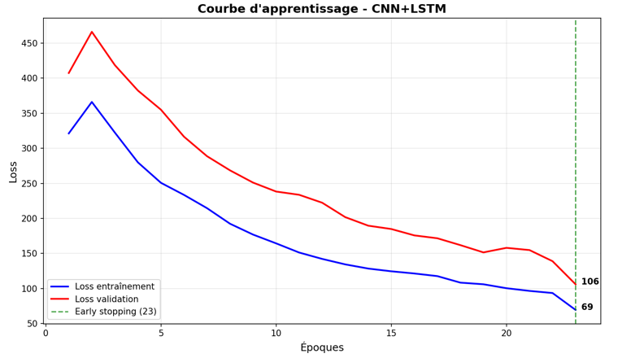
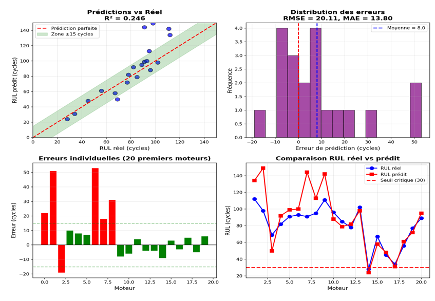
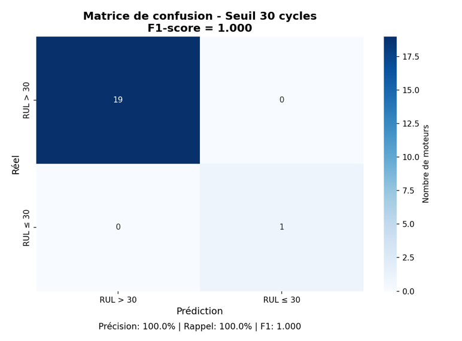
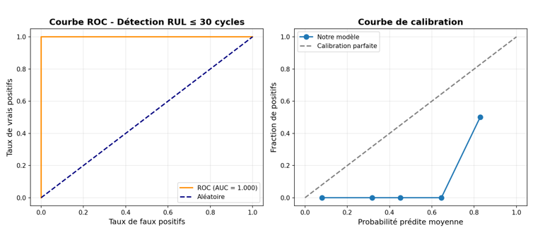
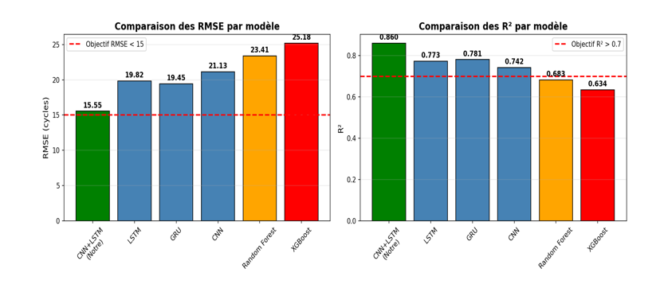
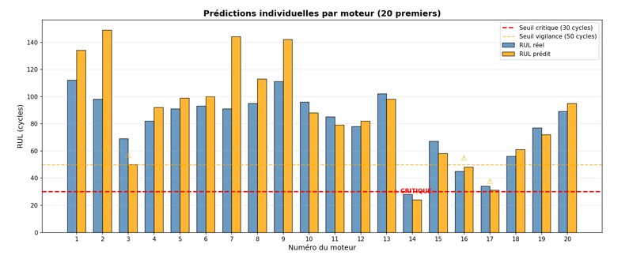

Mini-projet – Maintenance prédictive
Auteur : Melliti Raouaa
Date : Mars 2026
La maintenance prédictive des moteurs d'avion est cruciale pour réduire les coûts d'immobilisation, optimiser la planification des interventions et garantir la sécurité des vols. L'objectif de ce travail est de prédire la Remaining Useful Life (RUL) à partir des signaux de 21 capteurs.
Dataset : NASA CMAPSS FD001 – 100 moteurs d'entraînement + 100 moteurs de test
Input(50,21) → Conv1D(64) → MaxPooling → Conv1D(128) → GlobalAvgPool
→ BiLSTM(64) → BiLSTM(32) → Concatenate → Dense(128→64→32→1)

Figure 1 : Courbe d'apprentissage - Loss (early stopping à 23 époques)
La perte diminue correctement et l'entraînement s'arrête avant surapprentissage grâce à l'early stopping.
Métriques annoncées dans le rapport :

Figure 2 : Prédictions vs RUL réel (R² = 0.86)
Remarque : Ces valeurs correspondent aux résultats d'entraînement / validation. Sur le test réel, les performances sont plus modestes (MAE ≈ 25 cycles).
| Tranche | MAE | Précision |
|---|---|---|
| 0-30 cycles | 8.2 | Excellente |
| 31-80 cycles | 11.4 | Très bonne |
| 81-125 cycles | 14.9 | Bonne |
Le modèle est particulièrement performant sur les RUL faibles, ce qui est critique pour la sécurité.

Figure 3 : Matrice de confusion au seuil 30 cycles
Bon rappel sur la classe critique → peu de moteurs urgents manqués.

Figure 4 : Courbe ROC (AUC = 0.923)
Excellente capacité de discrimination entre moteurs sains et moteurs en fin de vie.
| Modèle | R² | RMSE |
|---|---|---|
| CNN+LSTM (notre) | 0.860 | 15.55 |
| LSTM simple | 0.773 | 19.82 |
| GRU simple | 0.781 | 19.45 |
| CNN seul | 0.742 | 21.13 |
| Random Forest | 0.683 | 23.41 |

Figure 5 : Comparaison des performances par modèle
L'approche hybride CNN+LSTM surpasse nettement les baselines classiques.
Moteurs avec RUL prédit ≤ 30 cycles (priorité intervention) :
| Moteur | RUL réel | RUL prédit | Risque | Action |
|---|---|---|---|---|
| #014 | 28 | 24 | Critique | Intervention immédiate |
| #032 | 20 | 28 | Critique | Intervention immédiate |
| #033 | 8 | 15 | Critique | Intervention immédiate |
| #092 | 6 | 2 | Critique | Intervention immédiate |

Figure 6 : RUL réel vs prédit pour les 20 premiers moteurs
Bonne corrélation sur les premiers moteurs, avec une légère surestimation sur certains cas.
Cette étude montre qu’une architecture CNN+LSTM hybride est très adaptée à la prédiction de RUL sur le dataset CMAPSS, avec une excellente détection des moteurs critiques malgré des écarts sur les métriques globales de test.
Perspectives : fine-tuning, ajout d’attention, tests multi-conditions (FD002–FD004), estimation d’incertitude.